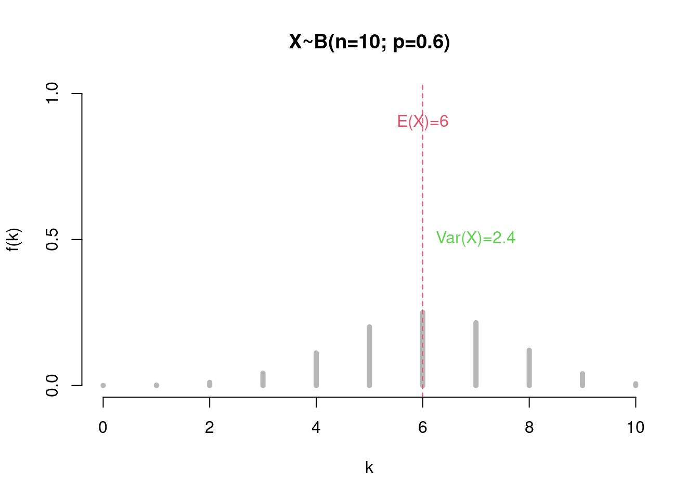

Chapter 8 Random variables
Nice to be able to calculate probabilities for various events üòÑ! As business analysts, we mostly work with numbers. This means that we usually transfer the results of a random process to numerical values. For example, we summarize a purchase decision (the interaction of unknown customer preferences and complex consequences of customer interactions with their environment) into a few numerical values, such as the number of products purchased, orders placed or the average invoice amount. We are primarily interested in the resulting numbers, while we can‚Äôt or don‚Äôt want to model the customer‚Äôs complex decision-making process.
However, these numbers that we are looking at are not fixed but vary from customer to customer, month to month, etc. If we had to indicate future sales today, we would hardly be able to give a concrete value. We know approximately what values the sales volume can attain, but these are associated with uncertainty and therefore depend on complex events (random processes) that are partly controlled by chance. Probabilistically speaking, this future sales volume is a random variable.
In this chapter we will learn:
- How to define the random variables and what kind of examples exist (\(\leadsto\) discrete vs. continuous random variables),
- how to derive distribution of random variables,
- how to calculate the key parameters of this distribution, as the expected value and the variance, but also the covariance and the quantiles, and
- what typical distributions for random variables exist and how to use them.
A random variable \(X\) is a variable whose values are derived from the result of a random operation.
A number \(x\in \mathbb R\), which the random variable \(X\) assumes based on an outcome of an associated random process, is called the realization or the value of \(X\).
Examples:
- Sum of two dice,
- Stock return in the next month,
- Number of app users in a survey.
We differentiate between two types: discrete and continuous random variables, depending on what values they can assume.
The distribution of a random variable \(X\) indicates which values in \(\mathbb R\) are assumed with which probabilities. This distribution is derived from the original random process.
Since random variables have numbers as values, we consider the following events:
\[\begin{equation*} \{X=x\},\quad \{X\not=x\}, \quad \{X\leq x\},\quad \{X>x\}, \quad \{a\leq X\leq b\}. \end{equation*}\] These events are assigned probabilities by the distribution of the random variable.
8.1 Discrete random variable
A random variable \(X\) is called discrete if it assumes a finite or countably infinite number of values \(x_1,x_2,\ldots, x_n, \ldots\). Such as dice numbers, number of orders, number of customers per hour, indicator of a loan default or of a product purchase.
The probability distribution of \(X\) is given by the probabilities \[\begin{equation*} \mathbb P(X=x_i)=p_i, \quad i=1,2,\ldots. \end{equation*}\]
We denote the set of values of \(X\) with \(\mathcal T=\{x_1,x_2,\ldots\}\).
For the probabilities \(p_1,p_2,\ldots\) applies (according to the axioms): \[\begin{gather*} \phantom{\quad i=1,2,\ldots} 0\leq p_i\leq 1,\quad i=1,2,\ldots,\\ p_1+p_2+\cdots = \sum_{i\geq 1} p_i=1. \end{gather*}\]
The probability \(\mathbb P(X\in A)\) for \(A\subseteq \mathcal T\) is given as \[\displaystyle \mathbb P(X\in A) = \sum_{i: x_i\in A} p_i.\]
Example 8.1 (Win when rolling two dice) Example 6.4 cont.
In the experiment “sum of two fair dice with faces 1, 2 and 3” we found:
- \(\Omega = \{2;3;4;5;6\}\) \(\omega\in\Omega,\) \(\omega=\) the sum of the dice,
- \(\mathcal F=\mathcal P(\Omega)\),
- \(\mathbb P\):
\[ \begin{array}{c|ccccc}\omega_i&2&3&4&5&6\\\hline \mathbb P(\{\omega_i\})&\frac 19&\frac 29&\frac 39&\frac 29&\frac 19 \end{array} \]
Based on this, we now define a random variable \(X=\) The random win (in euros):
\[ X=\begin{cases} 2\cdot \omega, &\text{ if } \omega \text{ odd},\\ - 1, &\text{ if } \omega \text{ even},\\ \end{cases} \]
What are the values of \(X\) and what are their probabilities?
Well, for each result \(\omega\) we can determine the value of \(X\), specifically:
\[ \begin{array}{c|ccccc}\omega_i&2&3&4&5&6\\\hline x_i&-1&6&-1&10&-1\\ \mathbb P(\{\omega_i\})&\frac 19&\frac 29&\frac 39&\frac 29&\frac 19 \end{array} \]
The probabilities of the \(X\) values correspond to the probabilities of the respective outcomes. Only, some values in the above list are doubled.
Therefore, to create a distribution of \(X\), we write down each value only once and sum the probabilities of the outcomes that give us that value to determine the final probability of that \(X\)-value:
\[ \begin{array}{c|ccc} x_i&-1&6&10\\\hline \mathbb P(x_i)=p_i&\frac 59&\frac 29&\frac 29 \end{array} \]
This is the distribution of \(X\).
Probability that \(X\) is positive is calculated as: \[\begin{equation*} \mathbb P(X>0)=\mathbb P(X\in \{6;10\}) = \mathbb P(X=6) + \mathbb P(X=10) = \frac{4}{9 }. \end{equation*}\]
8.1.1 Probability and distribution functions
Probability function
If you specify the distribution of \(X\) like in Example 8.1, then you only have probabilities for numbers that are in the value set \(\mathcal T\). That is, other real numbers \(x\not\in \mathcal T\) have the probability of zero, i.e. \(\mathbb P(X=x)=0\) for \(x\not \in \mathcal T\). The probability function assigns a value to every \(x\in \mathbb R\).
The probability function \(f(x)\) of a discrete random variable \(X\) for \(x\in \mathbb R\) is defined by
\[\begin{equation*} f(x) = \begin{cases} \mathbb P(X=x_i)=p_i, &\quad x=x_i\in \{x_1,x_2,\ldots, \},\\ 0,&\quad\text{else}. \end{cases} \end{equation*}\]
Properties of the probability function:
- \(f(x)\geq 0\), \(x\in \mathbb R\),
- \(\sum_{i\geq 1} f(x_i)=1\)
Distribution function
The (cumulative) distribution function (cdf) of a discrete random variable is given as \[\begin{equation*} F(x) = \mathbb P(X\leq x) = \sum_{i: x_i\leq x} f(x_i). \end{equation*}\]
Properties of the distribution function of a discrete random variable:
\(F\) is a right-sided continuous step function,
\(x\mapsto F(x)\) is monotonically increasing,
\(0\leq F(x)\leq 1\), for all \(x\in \mathbb R,\)
\(\lim_{x\rightarrow-\infty} F(x)=0\) and \(\lim_{x\rightarrow\infty} F(x)=1\).
Example 8.2 (Win when rolling two dice) Example 8.1 cont.
- Probability function: \[\begin{align} f(x)&=\begin{cases}\frac 59, \text{if }x=-1,\\ \frac 29, \text{if }x\in\{6;10\},\\ ~0, \text{else.} \end{cases} \end{align}\]
Figure 8.1: Probability function for X
- Distribution function: \[\begin{align} F(x)=\begin{cases} ~0, \text{if } x< -1,\\ \frac 59, \text{if }-1\leq x<6,\\ \frac 79, \text{if }~~6\leq x< 10,\\ ~1, \text{if }~~x\geq 10. \end{cases} \end{align}\]
Calculation example: if \(6\leq x< 10\) then
\[ F(x)=\mathbb P(X\leq x) = \mathbb P(X=-1) + \mathbb P(X=6) =\frac 59+\frac 29 = \frac 79. \]
Figure 8.2: Distribution function for X
Example 8.3 (Costs for customer orders) Example 6.9 cont.
In the example with orders via app or web, we had the following common probabilities:
\[ \begin{array}{c|cccccc} \mathbb P((a_i,b_i))&b_1=1&b_2=2&b_3=3&b_4=4&b_5=5&b_6=6\\\hline a_1=App&0.02&0.06&0.12&0.2&0.12&0.08 \\ a_2=Web&0.08&0.09&0.13&0.05&0.03&0.02 \\ \end{array} \]
We also found that app users place more orders on average.
Assume you process the orders placed in the online shop through a service partner. When customers places their orders in the shop, you have to pay a certain fee to the service partner. Furthermore, the fee depends on the number of orders and the interface: app or web.
We define the costs that result from all ordering processes on a user account as a random variable \(K\). \(K\) is calculated as:
\[ K = \begin{cases} 1.5\cdot \text{No. Orders}, &\text{ if via app and number. Orders }\leq 4,\\ 1\cdot \text{No. Orders} + 1, &\text{ if via web and number. Orders }\leq 4,\\ 6, &\text{ if via app and number. Orders }>4,\\ 5, &\text{ if via web and display. Orders }>4. \end{cases} \]
How are the costs distributed?
- Values of \(K\):
\[ \begin{array}{c|cccccc} (App,b_i)&(App,1)&(App,2)&(App,3)&(App,4)&(App,5)&(App,6)\\\hline k_{1,i}&1.5&3&4.5&6&6&6\\ \mathbb P(App,b_i)&0.02&0.06&0.12&0.2&0.12&0.08\\ \end{array} \]
\[ \begin{array}{c|cccccc} (Web,b_i)&(Web,1)&(Web,2)&(Web,3)&(Web,4)&(Web,5)&(Web,6)\\\hline k_{2,i}&2&3&4&5&5&5\\ \mathbb P(Web,b_i)&0.08&0.09&0.13&0.05&0.03&0.02\\ \end{array} \]
- Distribution of \(K\):
\[ \begin{array}{c|cccccccc} k_i&1.5&2&3&4&4.5&5&6\\\hline p_i&0.02&0.08&0.15&0.13&0.12&0.1&0.4 \end{array} \]
8.1.2 Expected value and variance
As in the descriptive statistics, it makes sense to define some meaningful parameters, that essentially describe the distribution of a random variable. For both types of random variables, we define the mean value \(\leadsto\) expected value, a measure for the spread \(\leadsto\) variance and standard deviation. For two discrete random variables, we also define covariance and correlation.
Expected value and variance are the most important metrics, as many families of distributions (more on this later) are clearly defined by these two metrics. The two key metrics give us information about the mean position and variability of the values of random variables.
Expected value
Definition 8.1 (Expected value/ Expectation) The expected value \(\mathbb E(X)\) of a discrete random variable \(X\) with value set \(\mathcal T=\{x_1,x_2,\ldots\}\) and probability function \(f(x)\) is: \[\begin{equation*} \mathbb E(X) = x_1 f(x_1) + x_2 f(x_2) + \cdots = \sum_{i\geq 1} x_i f(x_i). \end{equation*}\]
Properties of the expected value
- \(\mathbb E(a X + b) = a \mathbb E (X) + b\) (linear transformation)
- \(\mathbb E(X+Y) = \mathbb E(X) + \mathbb E(Y)\) (expected value of a sum = sum of expected values)
Variance and standard deviation
Definition 8.2 (Variance and standard Deviation) The variance of a random variable \(X\) is
\[\begin{equation*} \sigma^2 = \text{Var}(X) = \mathbb E((X-\mathbb E(X))^2)\\ =\sum_{i\geq 1} (x_i-\mathbb E(X))^2 f(x_i), \end{equation*}\]
The standard deviation is \(\sigma = \sqrt{\text{Var}(X)}.\)
Best suited for calculating variance: \[\begin{equation*} \text{Var}(X)=\mathbb E(X^2) - (\mathbb E(X))^2. \end{equation*}\]
For discrete random variables this means: \[\begin{align} \text{Var}(X)&=\sum_{i\geq1} x_i^2f(x_i)- (\mathbb E(X))^2. \end{align}\]
Properties of Variance
- \(\text{Var}(aX+b)= a^2\text{Var}(X)\) (linear transformation)
- \(\text{Var}(X+Y) = \text{Var}(X) + \text{Var}(Y)\) if \(X\) and \(Y\) are stochastically independent.
This results in the calculation rules for linear transformations (\(Y=a X + b\)): \[\begin{align} \mathbb E(Y) &= \mathbb E (a X + b)=a \mathbb E(X) + b,\\ \text{Var}(Y)&=\text{Var}(a X + b) = a^2\text{Var}(X). \end{align}\]
Example 8.4 (Win when rolling two dice) Cont. of 8.1.
Example 8.5 (Costs for customer orders) Example 8.3 cont.
In this example, we derived the following probability distribution for the cost \(K\):
\[ \begin{array}{c|ccccccc} k_i&1.5&2&3&4&4.5&5&6\\\hline p_i&0.02&0.08&0.15&0.13&0.12&0.1&0.4 \end{array} \]
That is,
\(\mathbb E(K) = \sum_{i=1}^7 k_i\cdot p_i = 1.5\cdot 0.02 + \ldots + 6\cdot 0.4 = 4.6.\)
\(\text{Var}(K) = \sum_{i=1}^7 k^2_i\cdot p_i - \mathbb E(K)^2= 1.5^2\cdot 0.02 + \ldots + 6^2\cdot 0.4 -4,6^2 = 1.965.\)
Because of rising inflation the service cost is revised. The new cost includes a \(20\%\) increase (an increase by the factor \({\color{red}{1.2}}\)) and an additional fee of \(\color{blue}1\) euro compared to the old costs, such that \[K_{new} = {\color{red}{1.2}}\cdot K+{\color{blue}{1}}.\] The new parameters are:
\(\mathbb E(K_{new}) = \mathbb E ({\color{red}{1.2}}\cdot K+{\color{blue}{1}})={\color{red}{1.2}}\cdot \mathbb E(K)+{\color{blue}{1}} = 1.2\cdot 4.6+1=6.52.\)
\(\text{Var}(K_{new}) = \text{Var}({\color{red}{1.2}}\cdot K+{\color{blue}{1}})= ({\color{red}{1.2}})^2\cdot \text{Var}(K) = 1.44\cdot 1.965=2.8296.\)
8.1.3 Covariance and correlation
Whenever we are dealing with several random variables as in example 6.9, the question of the association between the variables arises. If we can find a positive association pattern between the number of orders and the usage of app, then we could possibly boost the sales by promoting the mobile app usage.
A measure of linear dependence between two random variables is their covariance and their associated correlation.
Definition 8.3 (Covariance and Correlation) The covariance of two random variables \(X\) and \(Y\) is determined by \[\begin{equation*} \sigma_{XY}=\text{Cov}(X,Y) =\mathbb E[(X-\mathbb E(X))\, (Y-\mathbb E(Y))] = \mathbb E[X\cdot Y] - \mathbb E(X)\, \mathbb E(Y). \end{equation*}\]
Specifically for discrete random variables: \[ \text{Cov}(X,Y) =\sum_{i,j}x_i\cdot y_j\cdot f(x_i,y_j) - \left(\sum_ix_i\cdot f(x_i)\right)\cdot\left( \sum_jy_j\cdot f(y_j)\right). \]
The correlation coefficient is determined by \[\begin{equation*} \rho_{XY}=\frac{\sigma_{XY}}{\sigma_X\, \sigma_Y} = \frac{\text{Cov}(X,Y)} {\sqrt{\text{Var}(X)}\, \sqrt{\text{Var}(Y)}}. \end{equation*}\]
\(X\) and \(Y\) are called uncorrelated if \(\text{Cov}(X,Y)=0\).
\(-1\leq \rho_{XY}\leq 1\)
- If \(X, Y\) are independent, then they are also uncorrelated.
Example 8.6 (Orders and Usage) In the example 6.9 we looked at the joint distribution of the app usage and orders. Now we define two random variables:
\(A=\begin{cases}1, &\text{ falls } App\\0, &\text{ falls } Web\end{cases}\) (an indicator of app usage).
\(B=b_i\), \(b_i\in\{1; 2; \ldots 6\}\) the number of orders.
The joint probabilities are:
\[ \begin{array}{c|cccccc} \mathbb P((a_i,b_i))&b_1=1&b_2=2&b_3=3&b_4=4&b_5=5&b_6=6\\\hline a_1=1&0.02&0.06&0.12&0.2&0.12&0.08\\ a_2=0&0.08&0.09&0.13&0.05&0.03&0.02\\ \end{array} \]
Are the two quantities correlated?
- Expected values
\[\begin{align} \mathbb E(A)&=1\cdot0,6 + 0\cdot0,4 = 0,6,\\ \mathbb E(B)&=1\cdot0,1 + 2\cdot0,15 +\ldots + 6\cdot0,1=3,5. \end{align}\]
- Variances:
\[\begin{align} \text{Var}(A)&=1^2\cdot0,6 + 0^2\cdot0,4 - 0,6^2 = 0,24,\\ \text{Var}(B)&=1^2\cdot0,1 + 2^2\cdot0,15 +\ldots + 6^2\cdot0,1 - 3,5^2=2,05. \end{align}\]
- Covariance:
\[\begin{align} \text{Cov}(A,B)&=\mathbb E(A\cdot B) - \mathbb E(A)\, \mathbb E(B)\\ &=1\cdot 1\cdot0.02 + 1\cdot 2\cdot0.06 + 1\cdot 3\cdot0.12 + 1\cdot 4\cdot0.2 \\ &+ 1\cdot 5\cdot0.12 + 1\cdot 6\cdot0.08 \text{ (for A=1 and B=1;2;$\ldots$ 6)} + \\ &+ 0\cdot 1\cdot0.08 + \dots + 0\cdot 6\cdot0.02\text{ (for A=0 and B=1;2;$\ldots$ 6)} - \\ &- 0,6\cdot3,5 = 0,28. \end{align}\]
- Correlation:
\[\begin{align} \rho_{A,B}&=\frac{\text{Cov}(A,B)}{\sqrt{\text{Var}(A)}\cdot\sqrt{\text{Var}(B)}}\\ &= \frac{0,28}{\sqrt{0,24}\cdot\sqrt{2,05}} = 0,3992. \end{align}\]
So the two random variables are positively correlated.
Yuhu! We have a positive association between the app usage and the number of orders. It means, that by increasing the incentive for the app usage, we could increase our sales.
8.2 Continuous random variables
We have seen how to model discrete random variables. However, there are certainly cases where the framework of discrete random variables is not sufficient. For example, when we look at sizes, lengths, volumes, but also when we examine sales, times in spend in our online shop, waiting times or asset returns. These variables take on many different values, which makes modeling difficult for us because we have to take all their probabilities into account ü§î. In addition, due to varying measurement precision, we usually cannot distinguish between the online shopping time of \(12\) minutes and \(12,01\) minutes. Then why not just look at a range, e.g.¬†\((11,5, 12.5)\) minutes directly? In this case, instead of looking at fixed values, it makes sense to look at entire regions/ intervals (\(\leadsto\) continuous random variables) and at the density of these regions as the basis for the probability calculation, with the probabilities represented as areas under this density on the corresponding interval. This implies that the probability of hitting a very specific value (the point probability) becomes zero.
A random variable \(X\) is said to be continuous if there is a function (density function) \(x\mapsto f(x)\geq 0\), so that for every interval \([a,b]\) we have: \[\begin{equation*} \mathbb P(a\leq X\leq b)=\int_a^b f(x) dx. \end{equation*}\]
- The set of values \(\mathcal T\subseteq\mathbb R\) of a continuous random variable is uncountable. It corresponds either to the whole \(\mathbb R\) or to the subsets of \(\mathbb R\) (intervals).
8.2.1 Density function
Density properties:
- \(f(x)\geq 0\) for all \(x\in \mathbb R\)
- \(\int_{\mathbb R} f(x)\, dx=1\)
The point probability is zero: \(\mathbb P(X=x)=0\) for all \(x\in \mathbb R\) if \(X\) represents a continuous random variable.
Graphical representation:
Figure 8.3: Example: Density function
- Probabilities are represented by areas under density \(f(x)\). Calculation of the probability that \(X\) assumes values in set \(B\) using the density function: \[\begin{equation*} \mathbb P(X\in B) = \int_B f(x)\, dx = \int_a^b f(x)dx \end{equation*}\]
8.2.2 Distribution function
The (cumulative) distribution function of a continuous Random variable is given as \[\begin{equation*} F(x) = \mathbb P(X\leq x) = \int_{-\infty}^x f(t)\, dt. \end{equation*}\]
Properties of the distribution function for continuous random variables:
- \(F\) is a continuous function
- \(x\mapsto F(x)\) is monotonically increasing
- \(0\leq F(x)\leq 1\), for all \(x\in \mathbb R\)
- \(\lim_{x\rightarrow-\infty} F(x)=0\) and
- \(\lim_{x\rightarrow\infty} F(x)=1\).
Graphical representation:
Figure 8.4: Example: Probability function of a continuous random variable
If the distribution function \(F\) is given, one can obtain the density \(f\) by deriving the former: \[\begin{equation*} f(x) = F^\prime(x),\quad\text{ differentiable for $F$ in $x$} \end{equation*}\]
Calculating the probability that \(X\) takes values in \(B\) using the distribution function: \[\begin{equation*} \mathbb P(X\in B) = \mathbb P(a\leq X \leq b) = F(b) - F(a). \end{equation*}\]
Example 8.7 (Time in the online shop as a continuous random variable) We model the random variable \(X=\) time in the online shop in minutes as a continuous random variable with the density:
\[ f(x) = \begin{cases}0,001\cdot x , &\text{ for } 0\leq x\leq 20,\\ 0,025 -0,00025\cdot x, &\text{ for } 20< x\leq 100.\end{cases} \]
That is,
Figure 8.5: Probability density of X=Time in online shop
We compute the event probabilities:
\(\{X<20\}=\text{"Time in shop less than 20 minutes"}\): \[\begin{align} \mathbb P(X<20)&= \displaystyle \int_0^{20} (0,001\cdot x )dx = \text{Area of the red triangle}\\ &= \frac{1}{2}\cdot 20\cdot 0,02 = 0,2. \end{align}\]
\(\{X<60\}=\text{"Time in shop less than 60 minutes"}\): \[\begin{align} \mathbb P(X<60)&= 1-\mathbb P(X\geq 60)=1-\displaystyle \int^{100}_{60} (0,025 -0,00025\cdot x)dx \\ &= 1- \text{Area of the transparent triagle} = 1-\frac{1}{2}\cdot 40\cdot 0,01 = 0,8. \end{align}\]
Figure 8.6: Probability density of X=Time in online shop with probabilities as areas under the density fucntion.
Example 8.7 (Time in the online shop as a continuous random variable II) Computing the cumulative probability function from the density function:
\[F(x)=\int_{-\infty}^{x}\overbrace{f(t)}^{density~of~X}dt\stackrel{x>0}{=}\int_{0}^{x}f(t)dt.\]
Since the density change form depending on whether \(0<x\leq 20\) or \(20<x \leq100\), we have to consider the following cases:
- case: \(x\in [{0},{20}]\):

\[\begin{align} F(x) &= \int_{{0}}^x f(t)~ dt = \int_{0}^x (0.001\cdot t )~ dt=\left[0.001\cdot \frac{t^2}2 0\right]_{0}^x \\ & = 0.001\cdot \frac{x^2}2 - \left(0.001\cdot \frac{0^2}2 \right)\\ &=0.0005x^2. \end{align}\]
- case: \(x\in ({20},{100}]\):

\[\begin{align} \displaystyle F(x) &= \int_{0}^x f(t)~ dt\\ &= \int_{0}^{20} (0.001\cdot t )~ dt + \int_{20}^x (0.025 -0.00025\cdot t)~ dt\\ &=0.2 + \left[0.025\cdot t -0.00025\cdot \frac{t^2}2 \right]_{20}^x\\ &=0.2 + 0.025\cdot x -0.00025\cdot \frac{x^2}2 - \left(0.025\cdot 20 -0.00025\cdot \frac{20^2}2\right) \\ &= -0.25 + 0.025x -0.000125x^2. \end{align}\]
That is:
\[ F(x) = \begin{cases} 0,&x<0,\\ 0,0005x^2,&0\leq x\leq 20,\\ -0.25 + 0.025x -0.000125x^2,&20<x\leq 100,\\ 1,&x>100. \end{cases} \]

Figure 8.7: Cumulative distribution function of X=Time in online shop
Using the cumulative distribution function, we can calculate the event probabilities:
\(\{X<20\}=\text{"Time in shop less than 20 minutes"}\): \[\begin{align}\mathbb P(X<20)&= \mathbb P(X\leq20)=F(20) = 0,0005\cdot 20^2= 0.2.\end{align}\]
\(\{X<60\}=\text{"Zeit im Shop weniger als 60 Minuten"}\):\[\begin{align}\mathbb P(X<60)&=\mathbb P(X\leq60)=F(60) =-0.25 + 0.025\cdot 60 -0.000125\cdot 60^2= 0.8.\end{align}\]
\(\{X >30\}=\text{"Time in shop less than 30 minutes"}\):\[\begin{align} \mathbb P(X>30)&=1-\mathbb P(X\leq30)= 1-F(30) \\&= 1-(-0.25 + 0.025\cdot 30 -0.000125\cdot 30^2)\\ &= 0.6125.\end{align}\]

Figure 8.8: Cumulative probability function of X=Time in online shop with probabilities
Hint: use conditional probability and note that \(\mathbb P((0.1 \leq X \leq 0.3)\cap (X\leq 0.5))=\mathbb P(0.1 \leq X \leq 0.3)\)
8.2.3 Expected value and variance
Expected value and variance are the most important metrics, as many families of distributions (more on this later) are clearly defined by these two metrics. The two measures give us information about the mean position and variability of the values of random variables.
Expected value
Definition 8.4 (Expected Value/ Expectation (continuous rv)) The expected value \(\mathbb E(X)\) of a continuous random variable \(X\) with density \(f(x)\) is \[\begin{equation*} \mathbb E(X) = \int_{-\infty}^\infty x\, f(x)\, dx. \end{equation*}\]
Properties of the expected value (the same as for discrete rv)
- \(\mathbb E(a X + b) = a \mathbb E (X) + b\) (linear transformation)
- \(\mathbb E(X+Y) = \mathbb E(X) + \mathbb E(Y)\) (expected value of a sum = sum of expected values)
Variance and standard deviation (the same as for discrete rv)
Definition 8.5 (Variance and standard deviation (continuous rv)) The variance of a continuous random variable \(X\) is
\[\begin{equation*} \sigma^2 = \text{Var}(X) = \mathbb E((X-\mathbb E(X))^2)= = \int_{-\infty}^\infty (x-\mathbb E(X))^2\, f(x)\, dx. \end{equation*}\]
The standard deviation is \(\sigma = \sqrt{\text{Var}(X)}.\)
Best suited for calculating variance: \[\begin{equation*} \text{Var}(X)=\mathbb E(X^2) - (\mathbb E(X))^2. \end{equation*}\]
For continuous random variables this means: \[\begin{align} \text{Var}(X)&=\int_{-\infty}^{\infty} x^2f(x)dx- (\mathbb E(X))^2. \end{align}\]
Properties of Variance
- \(\text{Var}(aX+b)= a^2\text{Var}(X)\) (linear transformation)
- \(\text{Var}(X+Y) = \text{Var}(X) + \text{Var}(Y)\) if \(X\) and \(Y\) are stochastically independent.
This results in the calculation rules for linear transformations (\(Y=a X + b\)): \[\begin{align} \mathbb E(Y) &= \mathbb E (a X + b)=a \mathbb E(X) + b,\\ \text{Var}(Y)&=\text{Var}(a X + b) = a^2\text{Var}(X). \end{align}\]
Example 8.8 (Time in the online shop as a continuous random variable) The random variable \(X=\) time in the online shop in minutes has the density:
\[ f(x) = \begin{cases}0,001\cdot x , &\text{ for } 0\leq x\leq 20,\\ 0,025 -0,00025\cdot x, &\text{ for } 20< x\leq 100.\end{cases} \]
We have:
- Expected value:
\[\begin{align} \mathbb E(X) &= \int_{-\infty}^{\infty}x\cdot f(x)dx = \int_{0}^{20}x\cdot f(x)dx + \int_{20}^{100}x\cdot f(x)dx\\ &=\int_{0}^{20}x\cdot(0,001\cdot x )dx + \int_{20}^{100}x\cdot (0,025 -0,00025\cdot x)dx\\ &=\int_{0}^{20}0,001\cdot x^2 dx + \int_{20}^{100}0,025\cdot x -0,00025\cdot x^2dx\\ &=\Big[0,001\cdot \frac{x^3}3\Big]_{0}^{20} + \Big[0,025\cdot \frac{x^2}2 -0,00025\cdot \frac{x^3}3\Big]_{20}^{100}\\ &=2,6667 + 37,3333 = 40. \end{align}\]
- Variance:
\[\begin{align} \text{Var}(X) &= \mathbb E(X^2) - (\mathbb E(X))^2 = \int_{-\infty}^{\infty}x^2\cdot f(x)dx - 40^2\\ &\ldots \text{ (analogous to the expectation calculations above) }\\ &=\int_{0}^{20}0.001\cdot x^3 dx + \int_{20}^{100}\big(0.025\cdot x^2 -0.00025\cdot x^3\big)dx - 40^2\\ &=\Big[0.001\cdot \frac{x^4}4\Big]_{0}^{20} + \Big[0.025\cdot \frac{x^3}3 -0.00025\cdot \frac{x^4}4\Big]_{20}^{100}- 40^2\\ &=40 + 2026.6666667 - 40^2= 466.6666667 = (21.6025)^2. \end{align}\]
8.2.4 Quantiles of continuous random variables
In the first part of statistics course, we determined empirical quantiles. They helped us to understand which value divides the ordered observations so that at least a proportion \(p\) of the observations are less than or equal and at least a proportion \(1-p\) - greater or equal. In other words, \(\hat q_p\) has answered the question: which value is fallen below with frequency \(p\) or exceeded with frequency \(1-p\)? The same logic is used to define quantiles for random variables, except that it is now about the probability of falling below or exceeding this value.
Definition 8.6 (Quantile (continuous rv)) The \(p\)-quantile of a continuous random variable \(X\) with density \(f(x)>0\) on an interval in \(\mathbb R\) is the number \(q_p\) with \(0<p< 1\), for which applies: \[\begin{equation*} \mathbb P(X<q_p)=\mathbb P(X\leq q_p)=F(q_p)=p. \end{equation*}\]
The quantile is (for continuous random variables) clearly determined by the inverse of the distribution function, \[\begin{equation*} q_p=F^{(-1)}(p). \end{equation*}\]

Figure 8.9: Quantile of s atandard normal distribution for p=0,9
Special cases:
\(p=0.25\), then \(Q_p\) is called the lower quartile
\(p=0.50\), then \(Q_p\) is called the median
\(p=0.75\), then \(Q_p\) is called the upper quartile
Example 8.9 (Time in the online shop as a continuous random variable) Example 8.7 cont.
The random variable \(X=\) time in the online shop in minutes has the distribution function:
\[\small{ F(x) = \begin{cases} 0,&x<0,\\ 0,0005x^2,&0\leq x\leq 20,\\ -0.25 + 0.025x -0.000125x^2,&20<x\leq 100,\\ 1,&x>100. \end{cases}} \]

- \(0.1\) quantile: The distribution function takes the value \(0.1\) on the intercept \(0\leq x \leq 20\), so we set \[F(q_{0.1})=0.1\rightarrow 0.0005q_{0.1}^ 2 = 0.1\] and solve for \(q_{0.1}\): \[q_{0.1} = \pm\sqrt{\frac{0.1}{0.0005}} = \pm 14, 1421,\] so \(q_{0.1} =14.1421\), since \(0\leq q_{0.1} \leq 20\) must hold.
With a probability of 10%, the time spent in the online shop is shorter than \(14.1421\) minutes.
- \(0.9\) quantile: The distribution function takes the value \(0.9\) on the intercept \(20\leq x \leq 100\), so we set \[F(q_{0.9})=0.9\rightarrow -0.25 + 0.025 q_{ 0.9} - 0.000125q_{0.9}^2 = 0.9.\] Then (\(abc\) formula for quadratic equations \(ax^2 + bx + c=0\): \(x_{1,2}=\frac{-b\pm\sqrt{b^2 - 4ac}}{2a}\)) we have \[q_{0.9} = \frac{-0.025\pm\sqrt{0.025^2 - 4\cdot(-0.000125)\cdot(-1.15)}}{2\cdot ( -0.000125)}.\] In addition, \(q_{0.9}\) should be between \(20\) and \(100\). So, let’s take the “\(+\) version” and calculate \(q_{0.9} = 71.7157\).
With a probability of 10%, time spent in the online shop is longer than \(71.7157\) minutes.
8.3 Some important distributions
We have already modeled some random variables and it was always quite time-consuming to derive the distribution of random variables. We had to look at the original random process and determine for each result what value the random variable takes on for this result and derive the probability of the values based on that. Or with the continuous random variables, we had to laboriously calculate the distribution function, the expected value and the variance based on the density üí©.
Luckily üòç there are some pretty universal distribution models with variable parameters for which nice properties are already known and key figures can be determined using the parameters, so you don‚Äôt have to use them every time must be derived again.

Figure 8.10: Distributional models: Bernoulli, Binomial, and Normal distributions for random variables
8.3.1 Bernoulli distribution
Let \(A\in\mathcal F\) be an event with \(p=\mathbb P(A)\). The random variable \(X=1_A\) indicating whether an event \(A\) occurs or not (the indicator of \(A\)): \[\begin{equation*} 1_A= \begin{cases} 1,&\text{ if $A$ occurs},\\ 0,&\text{ if $A$ does not occur}. \end{cases} \end{equation*}\] is Bernoulli distributed with parameter \(p\) (\(X\sim Ber(p)\)).
The indicator function \(1_A\) takes the value \(1\) if event \(A\) occurs and the value \(0\) if \(A\) does not occur.
Examples of \(A\):
- an even number is obtained when rolling the dice;
- a loan customer does not repay his loan;
- a patient is cured by a specific therapy;
- the product of a delivery of goods is defective.
A random variable \(X\) is Bernoulli distributed with parameter \(p\in (0,1)\) if:
- Set of values: \(\mathcal T=\{0,1\}\)
- Probability function: \(f(1)=p\), \(f(0)=1-p\)
Parameters:
Expected value: \[\begin{equation*} \mathbb E(X)=p. \end{equation*}\]
Variance: \[\begin{equation*} \text{Var}(X)=p(1-p). \end{equation*}\]
You can easily check: \[\begin{align*} \mathbb E(X) &= 1\cdot f(1) + 0\cdot f(0) = p\\[3pt] \text{Var}(X) &= 1^2\cdot f(1) + 0^2\cdot f(0) - (\mathbb E(X))^2 % = p - p^2 = p(1-p). \end{align*}\]
Example 8.10 (Indicator of app usage) In example 8.6, we defined the random variable \(A=\)“app usage indicator”:
\(A=\begin{cases}1, &\text{ if } App\\0, &\text{ if } Web.\end{cases}\)
\(A\) only takes two values \(\{0;1\}\) and based on the occurrence of the event \(App=\)“a randomly selected customer uses the app”. The probability \(\mathbb P(App)=0.6\). This means:
- \(A\sim Ber(p=0.6)\)
- \(\mathbb E(A) = 0.6\) and
- \(\text{Var}(A) = 0.6\cdot (1-0.6) = 0.24.\)
We took a little longer when we had to calculate these metrics ‚Äúfrom scratch‚Äù in 8.6 üòè

Figure 8.11: Bernoulli distribution with p=0.6
8.3.2 Binomial distribution
The binomial distribution results when the sum of hits is formed from \(n\) independent repetitions of a Bernoulli experiment with constant probability \(p\).
I.e., if a Bernoulli random process is repeated \(n\) times with constant probability \(p=\mathbb P(A)\), then is the random variable \[\begin{equation*} X=\text{"Number of attempts in which $A$ occurs''} \end{equation*}\] binomially distributed with parameters \(n\) and \(p\).
A random variable is called binomially distributed with the parameters \(n\) and \(p\), for short \(X\sim B(n,p)\), if the following applies: \[\begin{equation*} \mathbb P(X=k) = f(k) = \binom{n}{k} p^k\, (1-p)^{n-k},\quad\text{ for } k=0,1,\ldots, n, \end{equation*}\] and \(f(k)=0\) otherwise.Remember: Binomial coefficient: \(\displaystyle\binom{n}{k} = \frac{n!}{k!(n-k)!}\) with \(n!=1\cdot 2\cdot \ldots \cdot n\) and \(0!=1\).
Parameters: \[\begin{equation*} \mathbb E(X) = np\quad\text{ and }\quad \text{Var}(X) = n p(1-p) \end{equation*}\]
Additive property: The sum of independent binomial distributed random variables with the same parameter \(p\) is again binomially distributed:
if \(X\sim B(n,p)\) and \(Y\sim B(m,p)\) are independent, then \(X+Y\sim B(n+m,p)\).Application examples:
- Number of loans in a portfolio that are not being serviced (assumption: loans default independently of each other.)
- Number of patients cured by therapy;
- Number of products in a delivery that are defective.
Example 8.11 (Number of app users) If we select \(n=10\) customers randomly (with replacement) from the customer pool and state whether they are app users or not, then we repeat the Bernoulli process: ‘Drawing a random customer and determining the \(App\)-property’ independently ten times.
The probability of success, here the probability of selecting an app user, corresponds to \(\mathbb P(App)=0.6\) the proportion of app users in the entire customer pool.
So \(X=\)’The number of app users among the randomly selected ten customers’ is binomially distributed: \(X\sim B(\color{green}{n=10}; \color{blue}{p=0.6})\)
We can now calculate the probabilities üòé: \[\begin{align} \mathbb P(X=\color{red}{5}) &=\binom{\color{green}{10}}{\color{red}{5}} \color{blue}{0.6}^\color{red}{5}\,(1-\color{blue}{0.6})^{\color{green}{10}-\color{red}{5}} = 0.2007,\\ \mathbb P(X<2) &=\mathbb P(X=0) + \mathbb P(X=1)=\binom{\color{green}{10}}{0} \color{blue}{0.6}^0\cdot(1-\color{blue}{0.6}) ^{{\color{green}{10}}-0} + \binom{\color{green}{10}}{1} \color{blue}{0.6}^1\,(1-\color{blue}{0.6})^{\color{green}{10}-1} \\ &= 0.0017,\\ \mathbb P(X=8) &=\binom{\color{green}{10}}{8} \color{blue}{0.6}^8\,(1-\color{blue}{0.6})^{\color{green}{10}-8} = 0.1209. \end{align} \]
Parameters: \[\begin{align} \mathbb E(X) &= n\cdot \color{blue}{p} = 10\cdot \color{blue}{0.6} = 6\\ \text{Var}(X)&= n\cdot \color{blue}{p}\cdot(1-\color{blue}{p}) = 10\cdot \color{blue}{0.6}\cdot (1-\color{blue}{0.6}) = 2.4. \end{align}\]

Figure 8.12: Binomial distribution with n=10 and p=0.6
Example 8.12 (Loan portfolio) Consider a homogeneous loan portfolio with \(500\) loans and default probability of \(1\)%.
- Random variable \(A = \text{'default of a loan'}\) with values \(a\in \{0 (\text{no default}),1 (\text{default})\}\) is Bernoulli distributed with \(p=0.01\).
- Random variable \(P = \text{'Number of defaults in the loan portfolio'}\) (assumptions: defaults occur independently of one another).
- Under the assumptions, \(P\) is \(\text{binomially distributed}\) with \(\color{blue}{p=0.01}\) and \(\color{green}{n=500}\): \(P\sim B(500,0.01)\).
\[\begin{align*} \mathbb E(P) &= \color{green}{n}\color{blue}{p} = \color{green}{500}\cdot \color{blue}{0.01} = 5,\\ \text{Var}(P) &=\color{green}{n}\color{blue}{p}(1-\color{blue}{p})=\color{green}{500}\cdot \color{blue}{0.01}\cdot (1-\color{blue}{0.01}) = 4.95,\\ \mathbb P(P>1) &=1-\mathbb P(P\leq 1) =1-\sum_{k=0}^1\binom{n}{k}p^k(1-p)^{n-k} \\ &=1- \Big(\frac{500!}{0!500!}(\color{blue}{0,01})^0(1-\color{blue}{0.01})^{500} + \frac{500!}{1!499!}(\color{blue}{0.01})^1(1-\color{blue}{0.01})^{499}\Big)=0,9602. \end{align*}\]
Figure 8.13: Binomial distribution with n=500 and p=0.01
Calculating with binomial distribution
- Example 8.11: \(X\sim B(n=10; p=0.6)\) \(\rightarrow\mathbb P(X=5)\) using gretl\(\rightarrow\)Tools\(\rightarrow\) p-value finder:
- Example 8.11: \(X\sim B(n=10; p=0.6)\) \(\rightarrow\mathbb P(X<2)\) using \(\mathbb P(X<2)=\mathbb P(X\leq 1)\):
- Example 8.12: \(X\sim B(n=500; p=0.01)\) \(\rightarrow\mathbb P(X>1)\):
\()\)
\()\)
8.3.3 Normal distribution
The normal distribution is the best known and most important distribution. In many applications, the empirical distribution of a feature can be approximated sufficiently well using a normal distribution.
In particular, the normal distribution is a good model if the underlying variable results from the additive overlap of a large number of independent, random individual effects. The theoretical justification for this empirically observable phenomenon is provided by the Central Limit Theorem (\(\leadsto\) next chapter)
The normal distribution is often called the Gauss distribution, named after the mathematician Carl Friedrich Gauß (1777–1855).
A random variable \(X\) is said to be normally distributed with parameters \(\mu\in \mathbb R\) and \(\sigma>0\), for short \(X\sim N(\mu,\sigma^2)\), if it has the has the following density: \[\begin{equation*} \varphi(x) = \frac{1}{\sqrt{2\pi\sigma^2}} \exp\left(-\frac{(x-\mu)^2}{2\sigma^2}\right), \quad x\in \mathbb R. \end{equation*}\]
Key parameters: \[\begin{equation*} \mathbb E(X)=\mu\quad\text{ and }\quad \text{Var}(X)=\sigma^2. \end{equation*}\]
With \(\mu=0\) and \(\sigma^2=1\) you get the standard normal distribution \(N(0,1)\) with density \[\begin{equation*} \varphi(x)=\frac{1}{\sqrt{2\pi}} \exp\left(-\frac{x^2}{2}\right), \quad x\in \mathbb R. \end{equation*}\]
The density of the standard normal distribution is denoted as \(\varphi(x)\) and the distribution function as \(N(x)\).
Properties of normal distribution
The density is symmetrical about \(\mu\), i.e. \[\begin{equation*} \varphi(\mu-x) = \varphi(\mu+x), \quad x\in \mathbb R. \end{equation*}\] In particular in the case \(\mu=0\): \(\varphi(-x)=\varphi(x)\).
The following applies to the distribution function of the standard normal distribution: \(N(-x) = 1- N(x)\)
Standardization:
- \(X\) is \(N(\mu,\sigma^2)\)-distributed \(\iff\) \(\displaystyle\frac{X-\mu}{\sigma}\) is \(N(0,1)\)-distributed .
- \(Y\) is \(N(0,1)\)-distributed \(\iff\) \(\mu + \sigma Y\) is \(N(\mu,\sigma^2)\)-distributed.
Probabilities within \(\sigma\) bounds \[\begin{align*} \mathbb P(|X-\mu|\leq \sigma) &= 0.6827\\ \mathbb P(|X-\mu|\leq 2\sigma) &= 0.9545\\ \mathbb P(|X-\mu|\leq 3\sigma) &= 0.9973 \end{align*}\]
Additive property: If \(X\sim N(\mu_X,\sigma_X^2)\) and \(Y\sim N(\mu_Y,\sigma_Y^2)\) are independent, then \[\begin{equation*} X+Y\sim N(\mu_X+\mu_Y, \sigma_X^2+\sigma_Y^2). \end{equation*}\]
Probability with which an \(N(\mu,\sigma^2)\)-distributed random variable lies between the boundaries \(a\) and \(b\):
\[\begin{equation*} \mathbb P(a\leq X\leq b) = \mathbb P\left(\frac{a-\mu}{\sigma}\leq \frac{X-\mu}{\sigma} \leq \frac{b-\mu}{\sigma}\right) = N\left(\frac{b-\mu}{\sigma}\right) - N\left(\frac{a-\mu}{\sigma}\right) \end{equation*}\]
Example 8.13 (Average temperature) We model the average temperature in Berlin in July as a random variable \(T: \text{'Average temperature in Berlin in July'}\) with values \(t\in \mathbb R\).
\(T\stackrel{}{\sim}{} N(\mu_T,\sigma_T)\) with \(\mu_T=\mathbb E(T)=20\), \(\text{Var}(T)=16\) and \(\sigma_T = 4\).
Probability: \[\begin{align*} \mathbb P(|T-20|\leq 4) &\approx 0.68,\\ \mathbb P(|T-20|\leq 8) &\approx 0.95,\\ \mathbb P(15\leq T\leq 25)& = \mathbb P(T\leq 25)-\mathbb P(T<15) =N\Big(\frac{25-20}{4}\Big) - N\Big(\frac{15-20}{4}\Big)\\ & = 0.8944 - 0.1056 = 0.7887. \end{align*}\]

Figure 8.14: Distributional models for continuous random variables
Calculating with normal distribution
The distribution function \(N(x)\) of a (standard) normally distributed random variable does not have a closed form. Therefore, we use statistical software to calculate the probabilities and to obtain the quantiles.
- Probabilities (Tools\(\rightarrow\) p-value finder)

- Quantiles (Tools\(\rightarrow\) statistical tables)
Let’s answer some quiz questions to practice calculations with normal distribution.